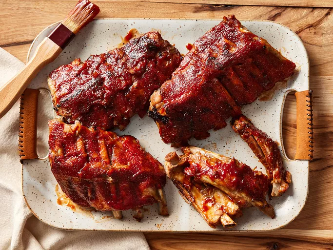

Baby Back Ribs

A delicious barbecue favorite
Some things in life are worth the wait, and a rack of baby back ribs is one of
them. Sweet, smoky, a little sticky, and always a little messy, they're the
kind of food that turns a backyard into a gathering and a napkin into a
necessity. One bite, and you'll understand why people argue about barbecue
with such devotion.
Ingredients
- 3 pounds baby back ribs, trimmed
- Salt and ground black pepper, to taste
- 1/2 cup of water
- 1/2 onion, sliced
- 1 clove garlic, minced
- 1(18 ounce) bottle of barbecu sauce
Preperation
Before cooking, check the bone side of the ribs for a thin, silvery membrane. If it's still attached, slide
a butter knife underneath one edge, then grip it with a paper towel and pull it off. This makes the ribs easier
to eat.Cut the racks into smaller sections if needed to fit your slow cooker. Arrange them upright around the
sides or stack them in sections, depending on the size of your slow cooker.
Instructions
- Step 1: Gather all ingredients.
- Step 2: Season ribs with salt and pepper.
- Step 3: Pour 1/2 cup water into the slow cooker, then add ribs. Scatter onion
and garlic over top. Cover and cook on Low for 8 hours or High for 4 hours.
- Step 4: When the ribs are almost finished, preheat the oven to 375 degrees.
- Step 5: Transfer ribs from the slow cooker to a baking sheet; discard onion
and garlic. Coat ribs with barbecue sauce.
- Step 6: Bake ribs in the preheated oven until sauce caramelizes and sticks to meat, 10 to 15 minutes.
- Step 7: Enjoy!
Home